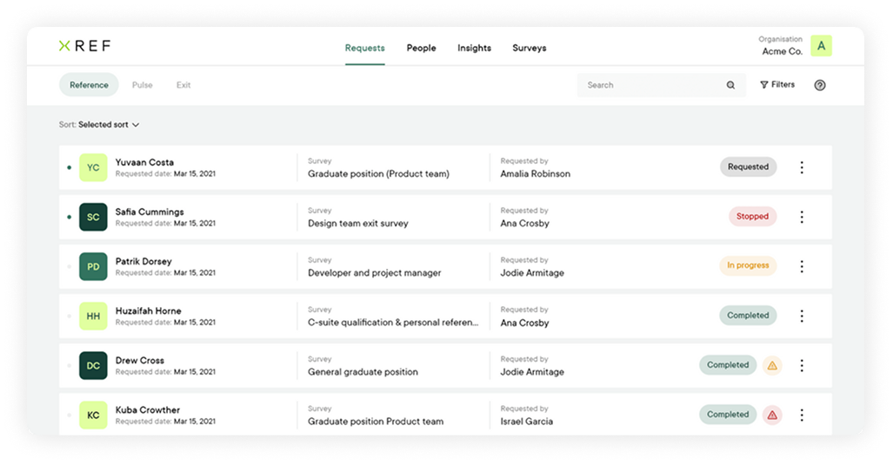

Recruit, retain and remember your people
Simplify your talent journey and make confident, people-focused decisions with Xref.
Introducing Xref
Get feedback across the entire talent journey
Simple
Save time: Create and send a survey in as little as 30 seconds. Feedback is compiled in easy to understand graphs for actionable insights.
Convenient
Reduce admin: Surveys can be created and completed anywhere, any time, on any device. Let automation do the rest.
Secure
Ensure peace of mind: Xref is ISO27001 certified and GDPR compliant so your data is kept safe and secure.

Reference
Recuit only the best validated talent.
Reduce time to hire and secure top talent fast. Make informed, compliant hiring decisions with Xref’s automated reference checking software.Pulse
Retain your people and make meaningful
Want the secret to reduce attrition and understand what metrics your organisation performs well at or can improve upon? Conduct a Pulse Survey.Exits
Remember
Collect, analyse and measure feedback from departing employees. Reduce attrition and improve retention over time by collecting consistent data to improve organisational performance.Platform
Automating your people journey
Survey builder
Create compliant, non-bias surveys in seconds. Choose a Reference or Exit Survey template or build your own from a selection of HR-approved, compliant, non-bias questions.
Learn moreAutomated requests
Receive feedback faster with automated requests. Save time and reduce manual, repetitive tasks with automated survey requests, easily accessible all in one place.
Learn morePeople records
Build strong talent relationships with centralised people records. Person-specific feedback is stored in one place to easily recruit, retain and remember talent.
Learn moreInsights
Know your next move with people and organisational insights. From an aggregated overview of data to detailed feedback, find the insights you need to make confident business decisions.
Learn moreAdditional checks
Connecting you to the world of digital trust
As a growing community of global checking vendors, Trust Marketplace is an aggregator for enhanced due diligence in the online trust environment.Security and compliance
We lead with a security-first mindset, a robust infrastructure, and a compliant operating environment.
Learn moreIntegrations
Integrate Xref with your everyday tools for simplified people management within a single platform.
Learn moreFor teams
Fits seamlessly into your ecosystem
Talent acquisition
In a fast-paced market, efficiency and trust are essential for Talent Acquisition. Data-driven insights can help confident hiring.
Learn morePeople and culture
In a fast-paced, people-driven market, recruiting and retaining talent is a challenge. Data-driven feedback is vital to recruit,
retain and remember top talent. Learn more
Unbiased, efficient hiring is imperative for staffing and recruitment firms. Fast, data-driven candidate insights can help.
Learn more